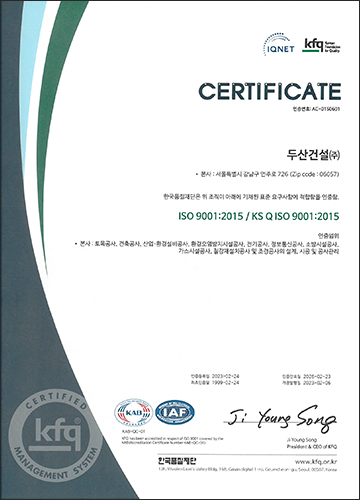

두산건설은 1999년 국제표준인 ISO 9001 품질경영시스템을 인증 받았으며 고객 기대와 요구에 부응할 수 있는
최상의 제품과 서비스를 제공하고자 품질경영 ISO 9001:2015을 적용한 품질경영시스템을 구축해 운영하고 있습니다.
또한 60여년간 누적된 다양한 시공경험과 품질에 대한 열정을 바탕으로 높은 품질경영시스템을 지속적으로 개선해 나아가고 있습니다.
품질경영 시스템 추진체계
-
조직과 조직상황
고객요구사항
관련 이해관계자의
니즈와 기대
-
기획
지원 및 운용
성과평가
개선
리더십
-
고객만족
제품 및 서비스
두산건설 품질경영방침
-
두산건설주식회사는 고객의 요구와 기대에 부응하며, 궁극적으로 사회에 봉사하기 위하여 수행하는 모든 활동, 제품 및 서비스는
KSQ ISO 900:2015 / ISO 900:1:2015 (이하 ISO 9001규격이라 칭함)과 발주자의 계약요구사항, 시방서, 관련표준 규격,
법적 요건 및본 품질경영 규정에 따라 수행됨을 보증하기 위해 본 품질경영방침을 제정하게 되었다.
최고경영자는 ISO 9001 규격이 엄격히 준수되고 본 품질경영규정이 효과적으로 시행되도록 하여야 하는 총괄적인 책임과 권한을
가지며, 이를 위해 경영자 중에서 기술지원 담당중역을 품질경영대리인으로 선임하여 품질경영시스템에 필요한 프로세스가
수집되고 실행, 유지됨을 보장토록 하고, 조직전반에 걸쳐서 고객요구사항에 대한 인식의 증진을 보장토록 하며, 품질 시스템 성과
및 개선의 필요성에 대한 보고를 하도록 하며, 이를 검토하고 품질경영시스템의 효과성을 지속적으로 개선해 나간다.
고객만족을 향한 우리의 끊임없는 노력은 계속 될 것이며, 품질경영시스템(ISO 9001)의 수립을 계기로 우리회사의 비전은
더 좋은 세상을 만들어가는 Infra Solution Provider. 를 품질방침으로 설정하여 우리는 최선을 다하여 나아갈 것이다.
경영층을 포함한 모든 임직원은 비전 및 품질방침을 달성하기 위해 단위조직별로 성과측정이 가능한 품질목표를 수립하고
품질경영규정 및 그 하부세칙을 준수하여 품질목표를 달성하며,
지속적인 개선을 통해 품질경영시스템이 효과적이고 효율적으로 실행되고 유지되도록 노력하여야 한다.
품질경영시스템 운영현황
-
1. 프로세스 관리
-
2. 품질리스크 관리
-
3. 품질내부심사
-
4. 교육훈련
-
5. 품질시스템의 유지
및 지속적 개선
-
6. 기술표준화
-
7. 협력업체 품질개선활동
품질경영 시스템 인증서
-

- ISO9001:2015
두산건설은 프로세스 접근방법과 리스크 기반사고를 바탕으로
효율적인 프로세스를 수립 및 운영하고 있습니다.
- 인증등록일 : 2023년 02월 24일
- 인증만료일 : 2026년 02월 23일
- 최초인증일 : 1999년 02월 24일
- 개정일 : 2023년 02월 06일
- 인증서 다운로드